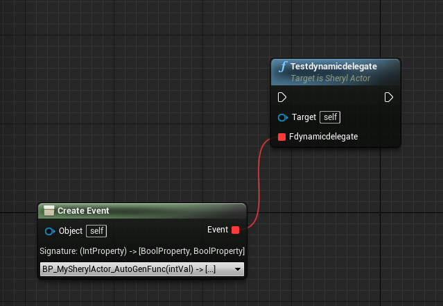
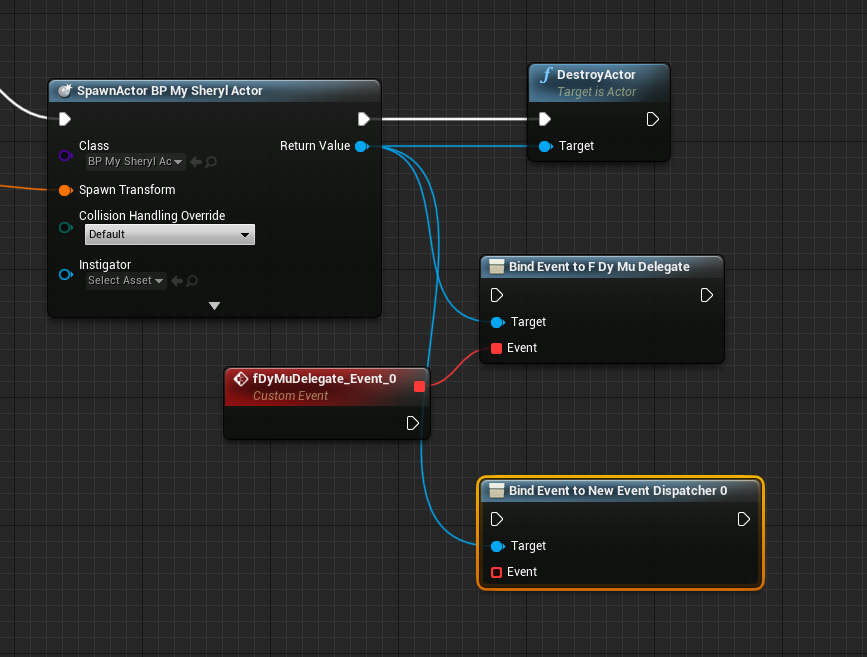

1. 简单基础概念
1.1. Actor
所有可以放入关卡的对象都是 Actor，比如摄像机、静态网格体、玩家起始位置。Actor支持三维变换，例如平移、旋转和缩放。你可以通过游戏逻辑代码（C++或蓝图）创建（生成）或销毁Actor。
Actor 功能 ：挂载组件, Actor 的生命周期，官方文档：https://docs.unrealengine.com/4.27/zh-CN/ProgrammingAndScripting/ProgrammingWithCPP/UnrealArchitecture/Actors/ActorLifecycle/
初始化一个Actor：
a) 在蓝图中直接初始化：spawn an actor，设置transform，设置return 值为destroy，或设置life span为具体时间，到达时间后自动触发销毁
b) 在cpp中进行初始化 ： 需要使用模板和GetWorld方法，比如 SherylActor *actor = GetWorld()->SpawnActor(Fvector(0,0,0),Fvector(0,0,0)); 对应的销毁方法actor->Destroy() || SetLifeSpan(1);
### 1.2. component
不同的负责的component 实现了 Actor 的功能
### 1.3. UObject
  UObject提供的元数据、反射生成、GC垃圾回收、序列化、编辑器可见、Class Default Object等，UE可以构建一个Object运行的世界。
a. 序列化：内存中的内容保存到磁盘 ——> 存档
b. 反序列化：磁盘中的内容读取到内存中
c. Class Default Object：CDO本质上是一个默认的“模板”对象，由类构造函数生成，之后未修改。
CDO是在引擎初始化时创建的，当引擎为每个类生成UClass对象时。每个UClass的实例都是在引擎初始化期间创建的，并被分配为该UClass的CDO；序列化与反序列化时只对CDO中修改的部分操作
d. __使用场景：需要用到UObject的特性时，可以继承它__
## 2. 基础类型的转换
### 2.1
  Fstring 与 Fname 是常用的两种字符串类型，FString更贴近C++中的string，而FName比较特别，它不直接存储字符串数据， 而是通过索引值关联到真正字符串数据。FName使用一个轻型字符串系统，在此系统中，特定字符串会被重复使用，数据表也只存储一次。__FName不可变，也无法被操作__。
```C++
//FName to FString
FString str = TEXT("test");
FName name = FName(str);
//FString to FName
FString str = name.ToString();
//std::string to FString
std::string stdStr = "test";
FString fStr(stdstr.c_str());
//FString to std::string
std::string stdStr(TCHAR_TO_UTF8(*fStr));
//FString to int32
FString fStr = TEXT("test");
int32 intValue = FCString::Atoi(*fStr);
//直接用C++
int32 intValue = atoi(TCHAR_TO_UTF8((*fStr)));
//FString to float
float fValue = FCString::Atof(*fStr);
fValue = atof(TCHAR_TO_UTF8(*fStr));
//FString to bool
bool boolValue = fStr.ToBool();
//int to FString
FString fStr = FString::FromInt(2);
//float to FString
FString fStr = FString:SanitizeFloat(2.2f);
//FString to char*
FString fStr(TEXT("test"));
const TCHAR *charValue = *fStr;
//FString to FText
FText fText = FText::FromFString(fStr);
//FText to FName
FName fName = FName(*fText.ToString());
//FString to TArray<uint8>
//先将FString 转换为 char 数组， 再进行遍历
FString fStr(TEXT("test"));
TArray<uinit8> targetArr;
TCHAR *charData = fStr.GetCharArray().GetData();
int32 len = FCString::StrLen(charData);
for (int i = 0; i < len; i++) {
uint8 *dstValue = (uint8 *)TCHAR_TO_UTF8 charData;
targetArr.Add(*dstValue);
charData ++;
}
// use UE4 api
FBase64::DeCode(fStr, targetArr);
//TArray<uint8> to FString
const std::string stdStr((reinterpre_cast<const char *>(targetArr.GetData()), targetArr.GetNum()));
FString fStr(stdStr.c_str());
//UEnum to FString ，反射用法
enum ETempEnum {
test0,
test1,
test2
};
const UEnum *enumPtr = FindObject<UEnum>(ANY_PACKAGE, TEXT("ETempEnum"), true);
if (enumPtr) {
FString str = enumPtr->GetNameStringByIndex(ETempEnum::test1);
}
//FString to UEnum
const UEnum *enumPtr = FindObject<UEnum>(ANY_PACKAGE, TEXT("ETempEnum"), true);
if (enumPtr) {
ETempEnum enumVal = (ETempEnum)enumPtr->GetIndexByNameString(TEXT"test1");
}
2.2 TCHAR 类型说明
C++ 支持两种字符：ANSI编码（使用"“包裹）和Unicode编码（使用L"“包裹）,导致对不同字符处理的方式不同。为了将其统一，微软定义了 TCHAR，通过条件编译（_UNICODE和UNICODE宏）控制实际使用的字符集，即：
当没有定义_UNICODE宏时，程序编译为 ANSI，TCHAR = char；
当定义了_UNICODE宏时，程序编译为 UNICODE，TCHAR = wchar_t ；
2.3 UE4中的智能指针
UE4 对 UObject 提供内存管理，而对原生的C++ 对象无；提供了智能指针来管理内存，是C++11智能指针的自定义实现。官方介绍文档链接：https://docs.unrealengine.com/4.27/zh-CN/ProgrammingAndScripting/ProgrammingWithCPP/UnrealArchitecture/SmartPointerLibrary/。 可区分为：
| 类型 | 适用情形 |
|---|---|
| 共享指针（TSharedPtr） | 共享指针拥有其引用的对象，无限防止该对象被删除，并在无共享指针或共享引用（见下文）引用其时，最终处理其的删除。共享指针可为空白，意味其不引用任何对象。任何非空共享指针都可对其引用的对象生成共享引用。 |
| 共享引用（TSharedRef） | 共享引用的行为与共享指针类似，即其拥有自身引用的对象。对于空对象而言，其存在不同；共享引用须固定引用非空对象。共享指针无此类限制，因此共享引用可固定转换为共享指针，且该共享指针固定引用有效对象。要确认引用的对象是非空，或者要表明共享对象所有权时，请使用共享引用。 |
弱指针（TWeakPtrTSharedPtr） |
弱指针类与共享指针类似，但不拥有其引用的对象，因此 不影响其生命周期 。此属性中断引用循环，因此十分有用，但也意味弱指针可在无预警的情况下随时变为空。因此，弱指针可生成指向其引用对象的共享指针，确保程序员能对该对象进行安全临时访问。 |
| 唯一指针（TUniquePtr） | 唯一指针仅会显式拥有其引用的对象。仅有一个唯一指针指向给定资源，因此唯一指针可转移所有权，但无法共享。复制唯一指针的任何尝试都将导致编译错误。唯一指针超出范围时，其将自动删除其所引用的对象。 |
3. delegate
delegate 是UE中定义的一种消息机制,常用于解耦不同对象之间的关联，delegate的触发者不与监听者有直接关联，两者通过delegate间接建立联系。delegate本质是一个特殊类的对象，内部可以储存一个或多个函数指针，调用参数和返回值，作用如同函数指针，但更安全，支持编译期类型检查
3.1 单播代理
DECLARE_DELETGATE(testDelegate);
DECLARE_DELEGATE_TwoParams(testDelegate, float , const FString &);
//C++ lambda
// C++11提供了对匿名函数的支持,称为Lambda函数(也叫Lambda表达式). Lambda表达式具体形式如下:
// [capture](parameters)->return-type{body}
// 如果没有参数,空的圆括号()可以省略.返回值也可以省略,如果函数体只由一条return语句组成或返回类型为void的话.形如:
// [capture](parameters){body}
使用方法
· 使用DECLARE_*宏声明一个delegate类型 FDelegateXXX
//cpp文件开头
DECLARE_DELEGATE_RetVal_TwoParams(int32, FDelegateTwoParams, float, const FString &);
· 声明一个 FDelegateXXX 类型的代理对象
//cpp class中声明一个对应代理类型的变量
FDelegateTwoParmas fDelegate;
· 绑定需要执行的函数指针到代理对象上
//eg. 在Actor类中BeginPlaty方法中绑定，这里第一个参数传 this 是因为写在类里的成员方法中，要绑定自己对应类中的方法
//绑定一个继承自UObject的类里的方法
fDelegate::BindUObject(this, &your_corresponding_function);
//eg.绑定lambda
fDelegate::BindLamda([this](float fVal, const FString &s)->int32 {
return 0;
});
//eg.绑定C++ 原生方法
//声明一个类A的对象a
A a;
fDelegate::BindRaw(&a, &A::funcA);
//eg. 绑定共享指针
//声明一个指向A类型对象的共享指针
TSharedPtr<A> aPtr = MakeSharable<new A>;
fDelegate::BindSP(aPtr.ToSharedRef(), &A::funcA);
//eg. 绑定一个静态函数
fDelegate::BindStatic(&your_static_func_name);
//Binds a shared pointer-based (slower, conditionally thread-safe) member function delegate.
TSharedPtr<A, ESPMode::ThreadSafe> aPtr1 = MakeSharable(new A);
fDelegate::BindThreadSafeSP(aPtr1.ToSharedRef(). &A::funcA);
//eg.通过函数名找到函数并绑定到代理
fDelegate::BindUFunction(this, FName("your_function_name_in_this_class"));
· 触发代理对象中的函数指针会立即执行
//执行时需要判断是否绑定
if (fDelegate.IsBond()) {
fDelegate.Excute(11, "ddd");
}
// no return val you can call
fDelegate.ExecuteIfBound()
· 不需要某个函数指针时，可将其从代理对象上解绑
fDelegate.Unbind();
3.2 多播代理
一对多，触发时可以执行多个函数，但无法确定多个函数的执行顺序，且多播代理无返回值。
//声明
DECLARE_MULTICAST_DELEGATE_TwoParms(FMultiDelegate, float a, const FString &fStr);
//绑定函数时使用的是AddXXX
FMultiDelegate.AddUObject(this, &A::funcA);
// 执行时利用广播，不需要判断是否有效
FMultiDelegate.Broadcast(33f, "test");
3.3 动态代理
可以暴露给蓝图使用的代理。
3.3.1 动态单播代理
注意命名规则是强制的，以F开头,且声明代理时需要给参数声明参数名 DECLARE_DYNAMIC_DELEGATE(FDynamicDegate); DECLARE_DYNAMIC_DELEGATE_RetVal_OnePram(float, FDynamicDegate, int32, intVal);
暴露给蓝图使用的方式
//通过使动态单播代理作为函数参数的形式将其暴露给蓝图
UFUNCTION(BlueprintCallable)
void testdynamicdelegate(FDynamicDelegate fdynamicdelegate);

3.3.2 动态多播代理
多播没有返回值。
| 宏 | 含义 |
|---|---|
| DECLARE_DYNAMIC_MULTICAST_DELEGATE[_RetVal, …]( DelegateName ) | 创建一个动态多播委托。 |
//声明
DECLARE_DYNAMIC_MULTICAST_DELEGATE(FDyMuDelegate);
//绑定函数
//注意需要绑定的函数必须声明为UFUNTION()，因为动态代理支持将其暴露给蓝图使用
UFUNCTION(BluprintAssianable)
FDyMuDelegate fDelegate;
//打开关卡蓝图，可以对actor 绑定事件
PS：动态多播代理类似于事件调度器，在actor的蓝图里创建一个新的event dispatcher,然后在关卡的蓝图里bind，如下图

4. 其他
4.1 单例的创建需要注意对象不被GC
参考资料： https://zhuanlan.zhihu.com/p/49046671
- UPROPERTY
- AddToRoot和RemoveFromRoot, 注意成对使用
- FObject 类型使用智能指针进行管理
- FObject 类型中使用 UObject 指针
- FStreamableManager 用法
FSoftObjectPath AssetPath(TEXT("/Game/Mannequin/Animations/ThirdPersonWalk.ThirdPersonWalk"));
FStreamableManager& AssetLoader = UAssetManager::GetStreamableManager();
//hold object in memory.TSharedPtr<FStreamableHandle> Handle = AssetLoader.RequestSyncLoad(AssetPath, true);
UObject* Obj = Handle->GetLoadedAsset();
//free memory of object.Handle->ReleaseHandle();
- FGCObjectScopeGuard 用法
{
FGCObjectScopeGuard(UObject* GladOS = NewObject<...>(...));
GladOS->SpawnCell();
RunGC();
GladOS->IsStillAlive(); // Object will not be removed by GC
}
- TArray<> TArray保持引用如果有个 TArray 容器，则这个TArray需要用一个* UPROPERTY()* 去保持容器的引用，然后里面的UObject就不需要再去AddToRoot去阻止被gc了。容器clear后，元素会自动被gc.
UPROPERTY(EditAnywhere, BlueprintReadWrite, Category = "UCoolDownComponent")
TArray<UCoolDown*> mCDArr;
UCoolDown* cd = NewObject<UCoolDown>(_class);
cd->SetSkillId(_skillId);
mCDArr.Add(cd);
- TMap<> 4.15版本支持了蓝图 TMap 容器，也是可以通过 UPROPERTY()去保持容器的引用，容器内的UObject就不需要再去AddToRoot去阻止被gc了
UPROPERTY(EditAnywhere, BlueprintReadWrite, Category = "MyChar")
TMap<int32, UBehavData*> mTestMap2;
UBehavData* bh = NewObject<UBehavData>(this, UBehavData::StaticClass());
bh->mId = 111;
mTestMap2.Add(111, bh);
bh = NewObject<UBehavData>(this, UBehavData::StaticClass());
bh->mId = 222;
mTestMap2.Add(222, bh);
- Destroying Objects(自己想删除)
if(!MyObject) return;
if(!MyObject->IsValidLowLevel()) return;
MyObject->ConditionalBeginDestroy(); //instantly clears UObject out of memory
MyObject = nullptr;
- Destroying Actors
if(!TheCharacter) return;
if(!TheCharacter->IsValidLowLevel()) return;
TheCharacter->Destroy();
TheCharacter->ConditionalBeginDestroy(); //essential extra step, in all my testing
- AActor gc机制
virtual void PostActorCreated() override; //做初始化工作
virtual void BeginPlay() override; //做初始化工作
virtual void BeginDestroy() override; //引擎在gc的时候调用，并不是立即调用，一般不用
virtual void EndPlay(const EEndPlayReason::Type EndPlayReason) override; //做清理工作
virtual void Destroyed() override; //用于释放成员，调用Destroy();会立即调用
- UActorComponent gc机制
// Begin UActorComponent Interface.
virtual void BeginPlay() override; //组件RegisterComponent注册的时候，且有OwnerActor才会立即调用，一般不用
virtual void BeginDestroy() override; //引擎在gc的时候调用，并不是立即调用，一般不用
virtual void EndPlay(const EEndPlayReason::Type EndPlayReason) override; //立即调用，一般这里做清理工作（注册过才会调用），且gc时还会再调用一次，一般不用
virtual void OnComponentCreated() override; //组件RegisterComponent注册的时候立即调用，一般这里做初始化工作
virtual void OnComponentDestroyed(bool bDestroyingHierarchy) override;//立即调用，一般这里做清理工作（只要DestroyComponent就会调用）
4.2 subsystem
为什么要使用 Subsystems
- 更适用的生命周期 引擎只支持一个 GameInstance ，运行周期是整个引擎的生命周期 自定义 ManagerActor，生命周期一般为当前 level 的生命周期 Subsystems 的生命周期可以依存于Engine，Editor，World，LocalPlayer
- 更简 GameInstance 或者自定义 ManagerActor，需要手动维控制创建、释放 Subsystems 自动创建、释放，提供 Initialize()、Deinitialize()，并且可重载
- 更模块化、更优雅、更封装、更易于维护、移植复用 GameInstance 中将任务系统，计分系统，经济系统、对话系统等多个Manager 写在一起，会变得臃肿 模块间的数据访问封装不够良好，容易污染 不利于业务逻辑模块的复用，特别是需要进行移植的时候，以及多个插件同时都有自己的 GameInstance Subsystems 可以为不同的 Manager 创建对应的Subsystems 如 Manager 划分， 任务系统Subsystem : UGameInstanceSubsystem 计分系统Subsystem : UGameInstanceSubsystem 经济系统Subsystem : UGameInstanceSubsystem 对话系统Subsystem : UGameInstanceSubsystem 更模块化，代码显得优雅 解耦性高，易于维护、分工协作；易于移植复用 模块间的数据访问具有更好的封装性
- 更友好的访问接口 Subsystem 更像以全局变量的形式来访问 提供了 Python 脚本的访问，用于编写编辑器脚本或编写测试代码
- Subsystem 无需覆盖引擎类。
一套可以定义、自动实例化和释放的类的框架。可以将其理解为 GamePlay 级别的 Component
subsystem 定义及用法 UEngineSubsystem 代表引擎，数量1，editor或runtime模式下都是全局唯一，进程开始时创建，进程退出时销毁 UEditorSubsystem 代表编辑器，数量1，只在editor模式下存在，editor创建时创建，editor销毁时销毁 UGameInstanceSubsystem 代表一场游戏，数量1。runtime或pie模式下都算，一场游戏可能会涉及到多个world切换；游戏开始时创建，游戏退出时销毁 UWorldSubsystem 代表世界，数量可能>=1，生命周期与归属的world有关 ULocalPlayerSubsystem 代表本地玩家，数量可能>=1，UE支持本地分屏多玩家游戏，LocalPlayer往往和PlayerController一起访问，但其生命周期与GameInstance对齐（默认一开始就创建好一定数量的本地玩家）；或者说其生命周期与具体的LocalPlaer相关，因为可以调用AddPlayer
4.3 模块
4.3.1 定义
模块是通过C#源文件声明的，扩展名为.build.cs，存储在项目的 源（Source） 目录下。属于一个模块的C++源代码与.build.cs文件并列存储，或者存储在它的子目录中。每个.build.cs文件都声明一个类，从ModuleRules基类衍生而来，并设置属性来控制如何从其构造函数进行构建。
4.3.2 引擎Source目录下分为以下模块：
| Developer | Editor、Programs会使用，但不能是Games |
| Editor | 只被Editor使用 |
| Programs | 独立的Applitcations或者工具类 |
| Runtime | Editor,Games,Programs都会使用 |
| ThirdParty | 第三方库 |
4.3.3 其他
- 模块之间的使用类似于引用库，需要在.cs里面声明引入了其他模块
- 模块接口 IModuleInterface 模块加载函数 StartupModule() 模块卸载函数 ShutdownModule()
- 一个插件可以有多个模块，但是有且只有一个主模块
- 虚幻引擎通过在磁盘上搜索 .uplugin 文件来查找插件。将此类文件称为 插件描述文件。运行此类程序时，引擎、编辑器和 UnrealBuildTool（UBT）将自动发现并自动加载插件描述文件。
- uproject 和 uplugin 很像，都是json格式，具体格式可参考官方文档。